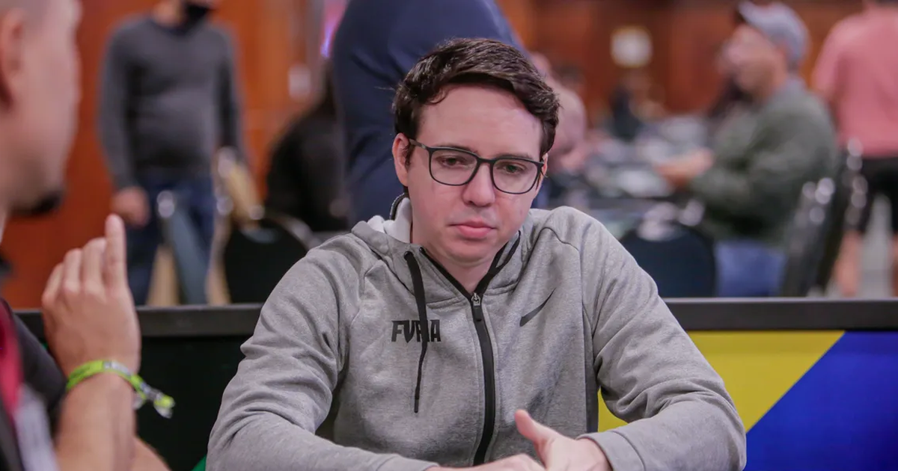
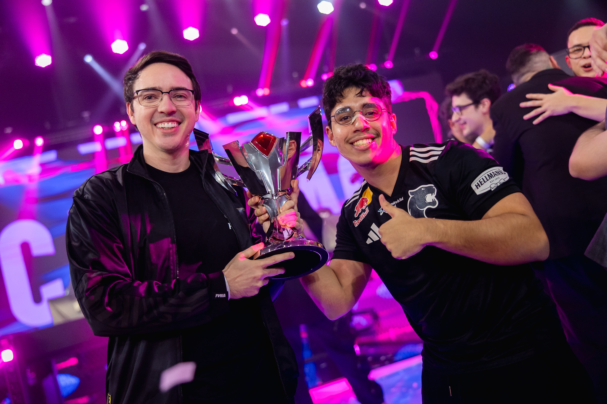

Jaime Pádua, fundador e co-CEO da FURIA, celebrou a aparição de Danil "molodoy" Golubenko na lista de melhores do mundo da HLTV. O awper da organização brasileira fez sua primeira aparição no ranking já na sexta colocação. "Um grande resultado para o nosso jovem awper. Ele acreditou nas nossas ideias e teve um impacto massivo no time. O que nos deixa ainda mais animados é que esse é somente o seu primeiro ano no mais alto nível do CS. Estamos muito orgulhosos", escreveu Jaime no X (antigo Twitter). 
molodoy é o terceiro jogador da FURIA a entrar no Top 20 da HLTV em 2025 e é o mais bem ranqueado. O cazaque alcançou a sexta colocação depois de jogar, pela primeira vez, no tier 1 do CS. Ele foi contratado para defender o time brasileiro em abril do ano passado. A HLTV explicou que molodoy conquistou o top 6 depois de boa performance contra os melhores times do mundo, em arenas e em finais, além de ter conquistado dois MVPs em grandes eventos, o que fez com que se destacasse contra nomes como Shahar "flameZ" Shushan e Kaike "KSCERATO" Cerato.
 VoltarJaime Pádua, fundador e co-CEO da FURIA, celebrou a aparição de Danil "molodoy" Golubenko na lista de melhores do mundo da HLTV.
Leia maisA BLAST perguntou para jogadores dos principais times mundiais qual time é o mais carregado por somente um jogador. A grande maioria das respostas foi a Spirit por conta do nível de Danil "donk" Kryshkovets.
Leia mais